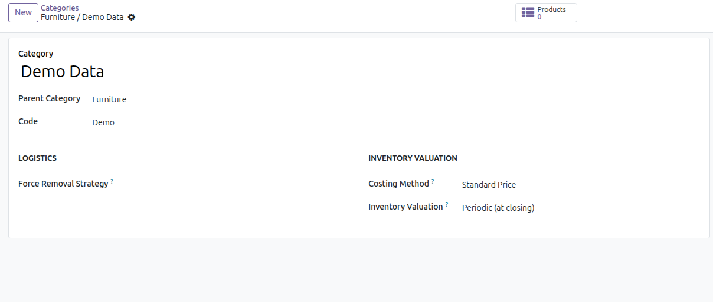
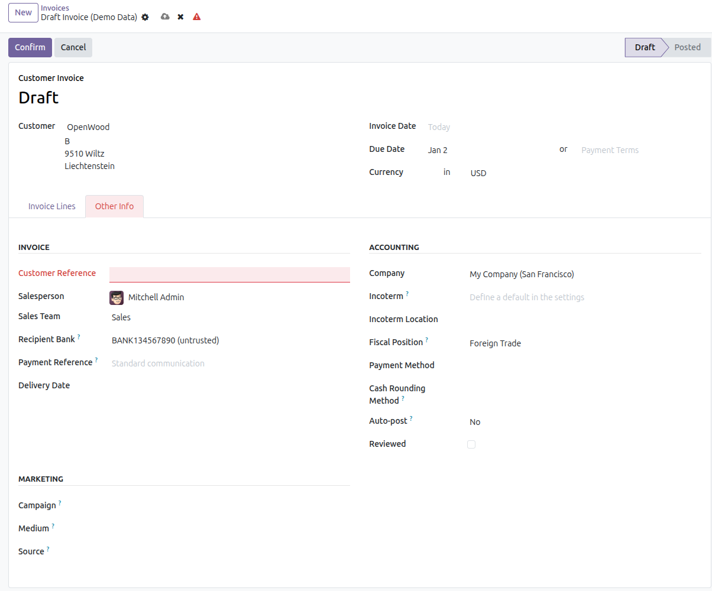
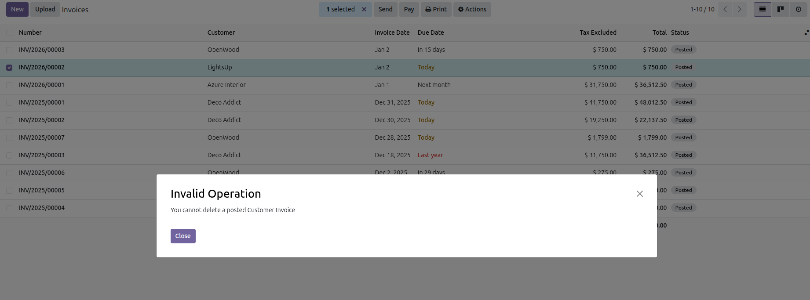

Inom Product Category Code & Mandatory Invoice Reference module enhances Odoo Inventory and Accounting by introducing structured product category coding and enforcing mandatory customer references on invoices.
With this module installed, product categories can be easily identified using unique codes, while customer invoices cannot be posted without a proper reference. This ensures data accuracy, compliance, and better accounting control.
Missing invoice references and unstructured product categorization can lead to accounting errors and audit issues. Inom Product Category Code & Mandatory Invoice Reference module ensures that essential data is always captured and critical accounting records remain protected.
1. Open or create a Product Category and assign a unique Code.
2. Create a Customer Invoice in Accounting.
3. Enter a valid Customer Reference before posting the invoice.
4. Once posted, the invoice cannot be deleted, ensuring data integrity.
Below are preview images of the module interface and functionality.



For support, bug reports, or customization requests, please contact us:
Email: info@inomerp.in
We provide a one-time setup and installation service completely free of cost on any Odoo-supported server. Our experienced technical team ensures proper installation, configuration, and deployment so you can start using the module smoothly without any technical complications.
Important Note:
Free support is provided for issues caused by the standard Odoo source code
related to this module. Any issues arising due to third-party modules,
custom developments, or compatibility conflicts are outside the scope of
free support and may be chargeable.